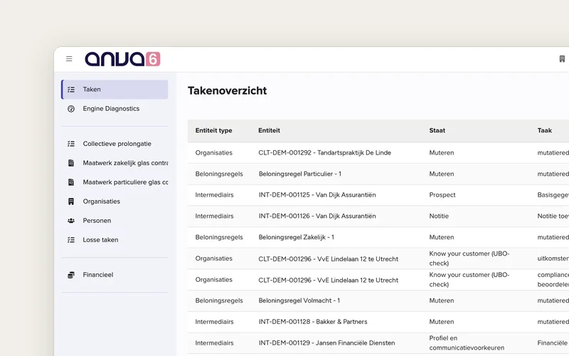
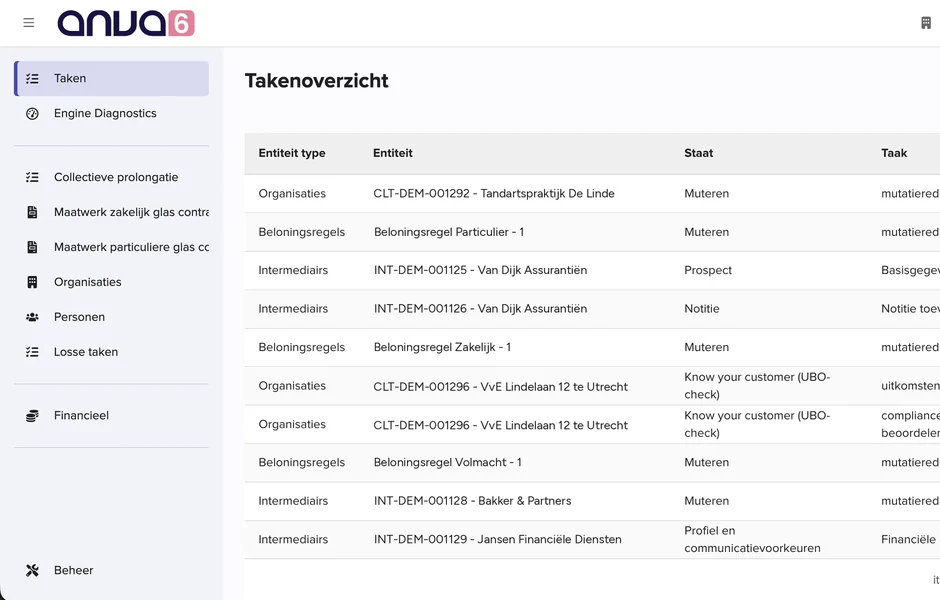
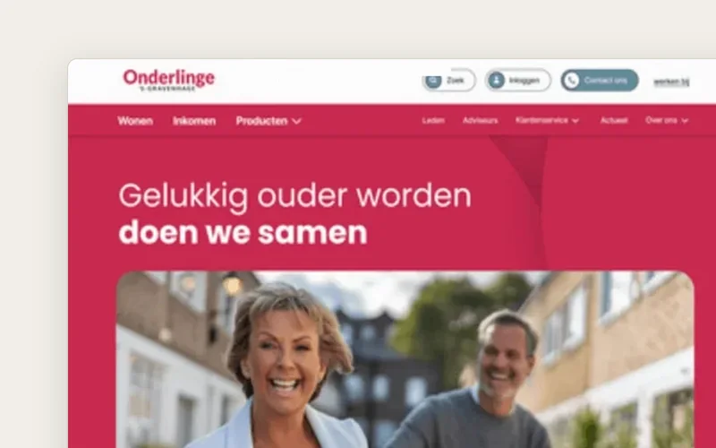

ANVA – ANVA 6
Mee vormgeven aan het nieuwe cloudplatform voor de verzekeringsketen. Lopend sinds 2026.
Open voor een goed gesprek over je team
Senior UX en product designer met ruim tien jaar ervaring. Ik werk aan interne platformen, klantportalen en apps bij onder andere Enexis, NS en Onderlinge Nederland, van het eerste gesprek met gebruikers tot het design system waar development op bouwt.


Per case: het probleem, wat ik ontdekte, welke keuzes ik maakte en wat het opleverde.

Mee vormgeven aan het nieuwe cloudplatform voor de verzekeringsketen. Lopend sinds 2026.

Complexe operationele processen vereenvoudigd in één centraal platform.

Het developer portal doorontwikkeld met de componenten en patronen van Tractie.

Redesign met een eigen design system en WCAG AA als uitgangspunt.

Zoeken en vergelijken toegankelijker gemaakt voor ouderen en hun naasten.

Een app waarmee zorgprofessionals open diensten snel zien en erop reageren.
Van eerste interview tot getest prototype, voor werkprocessen met veel stappen en uitzonderingen.
Tokens, componenten en governance die teams echt gebruiken.
WCAG AA als uitgangspunt, opgelost in de componenten zelf.
Teams en stakeholders achter één richting krijgen, en collega's coachen.
Lando begrijpt snel wat er speelt. Hij stelt scherpe vragen, brengt structuur aan in complexe vraagstukken en weet verschillende belangen samen te brengen.
Hij denkt niet alleen vanuit de gebruiker, maar houdt ook rekening met technische haalbaarheid. Daardoor sluiten zijn ontwerpen goed aan op de praktijk.
Lando neemt eigenaarschap en wacht niet af. Hij ziet waar kansen liggen, krijgt mensen mee en helpt teams betere keuzes te maken.
Samenwerken
Ik sta open voor een gesprek over een rol waarin product design, design systems en toegankelijkheid samenkomen. Een mail of LinkedIn-bericht is genoeg.